전자기사 (2019-03-03 기출문제)
1과목: 전기자기학
1. 접지된 구도체와 점전하 간에 작용하는 힘은?
- 항상 흡인력이다.
- 항상 반발력이다.
- 조건적 흡인력이다.
- 조건적 반발력이다.
(정답률: 60%)

2. 사이클로트론에서 양자가 매초 3×1015 개의 비율로 가속되어 나오고 있다. 양자가 15MeV의 에너지를 가지고 있다고 할 때, 이 사이클로트론은 가속용 고주파 전계를 만들기 위해서 150kW의 전력을 필요로 한다면 에너지 효율(%)은?
- 2.8
- 3.8
- 4.8
- 5.8
(정답률: 34%)
3. 단면적 4cm2의 철심에 6×10-4Wb의 자속을 통하게 하려면 2800AT/m의 자계가 필요하다. 이 철심의 비투자율은 약 얼마인가?
- 346
- 375
- 407
- 426
(정답률: 47%)
4. 진공 중에서 무한장 직선도체에 선전하밀도 ρL=2π × 10-3C/m가 균일하게 분포된 경우 직선도체에서 2m와 4m떨어진 두 점사이의 전위차는 몇 V 인가?
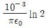
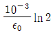
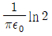
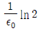
(정답률: 32%)
5. 평행판 콘덴서의 극판 사이에 유전율 ε, 저항률 ρ인 유전체를 삽입하였을 때, 두 전극간의 저항 R과 정전용량 C의 관계는?
- R = ρεC
- RC = ε / ρ
- RC = ρε
- RCρε = 1
(정답률: 39%)
6. 맥스웰방정식 중 틀린 것은?
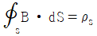
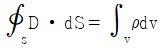
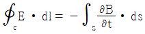
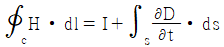
(정답률: 40%)
7. 다음의 관계식 중 성립할 수 없는 것은? (단, μ는 투자율, χ는 자화율, μ0는 진공의 투자율, J는 자화의 세기이다.)
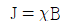
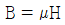
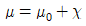
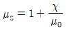
(정답률: 42%)
8. 자기회로의 자기저항에 대한 설명으로 옳은 것은?
- 투자율에 반비례한다.
- 자기회로의 단면적에 비례한다.
- 자기회로의 길이에 반비례한다.
- 단면적에 반비례하고, 길이의 제곱에 비례한다.
(정답률: 39%)
9. 균일한 자장 내에 놓여 있는 직선도선에 전류 및 길이를 각각 2배로 하면 이 도선에 작용하는 힘은 몇 배가 되는가?
- 1
- 2
- 4
- 8
(정답률: 36%)
10. 와류손에 대한 설명으로 틀린 것은? (단, f : 주파수, Bm : 최대자속밀도, t : 두께, ρ : 저항률이다.)
- t2 에 비례한다.
- f2 에 비례한다.
- ρ2 에 비례한다.
- Bm2에 비례한다.
(정답률: 42%)
11. 그림과 같이 전류가 흐르는 반원형 도선이 평면 Z=0 상에 놓여 있다. 이 도선이 자속밀도 B = 0.6ax - 0.5ay + az(Wb/m2)인 균일 자계 내에 놓여 있을 때 도선의 직선 부분에 작용하는 힘(N)은?
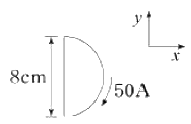
- 4ax + 2.4az
- 4ax - 2.4az
- 5ax – 3.5az
- -5ax + 3.5az
(정답률: 35%)
12. 서로 다른 두 유전체사이의 경계면에 전하분포에 없다면 경계면 양쪽에서의 전계 및 전속밀도는?
- 전계 및 전속밀도의 접선성분은 서로 같다.
- 전계 및 전속밀도의 법선성분은 서로 같다.
- 전계의 법선성분이 서로 같고, 전속밀도의 접선성분이 서로 같다.
- 전계의 접선성분이 서로 같고, 전속밀도의 법선성분이 서로 같다.
(정답률: 40%)
13. 환상철심에 권수 3000회 A코일과 권수 200회 B코일이 감겨져 있다. A코일의 자기인덕턴스가 360mH일 때 A, B 두 코일의 상호 인덕턴스는 몇 mH 인가? (단, 결합계수는 1이다.)
- 16
- 24
- 36
- 72
(정답률: 33%)
14. 평행판 콘덴서에 어떤 유전체를 넣었을 때 전속밀도가 2.4 × 10-7C/m2이고, 단위 체적중의 에너지가 5.3 × 10-3J/m3이었다. 이 유전체의 유전율은 약 몇 F/m인가?
- 2.17 × 10-11
- 5.43 × 10-11
- 5.17 × 10-12
- 5.43 × 10-12
(정답률: 35%)
15. 대전된 도체의 특징으로 틀린 것은?
- 가우스정리에 의해 내부에는 전하가 존재한다.
- 전계는 도체 표면에 수직인 방향으로 진행된다.
- 도체에 인가된 전하는 도체 표면에만 분포한다.
- 도체 표면에서의 전하밀도는 곡률이 클수록 높다.
(정답률: 39%)
16. 평행한 두 도선간의 전자력은? (단, 두 도선간의 거리는 r(m)라 한다.)
- r에 비례
- r2에 비례
- r에 반비례
- r2에 반비례
(정답률: 37%)
17. 원형 선전류 I(A)의 중심축상 점 P의 자위(A)를 나타내는 식은? (단, θ는 점 P에서 원형전류를 바라보는 평면각이다.)
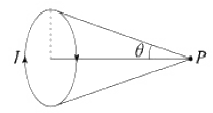
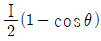
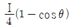
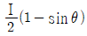
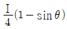
(정답률: 35%)
18. 비투자율 μs=1, 비유전율 εs=90인 매질 내의 고유임피던스는 약 몇 Ω 인가?
- 32.5
- 39.7
- 42.3
- 45.6
(정답률: 37%)
19. q(C)의 전하가 진공 중에서 v(m/s)의 속도로 운동하고 있을 때, 이 운동방향과 θ의 각으로 r(m) 떨어진 점의 자계의 세계(AT/m)는?
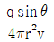
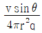
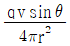
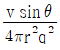
(정답률: 53%)
20. x ＞ 0인 영역에 비유전율 εr1=3인 유전체, x ＜ 0인 영역에 비유전율 εr2=5인 유전체가 있다. x ＜ 0 인 영역에서 전계 E2 = 20ax + 30ay-40az V/m일 때 x ＞ 0 인 영역에서의 전속밀도는 몇 C/m2 인가?
- 10(10ax+9ay-12az)ε0
- 20(5ax-10ay+6az)ε0
- 50(2ax+ay-4az)ε0
- 50(2ax-3ay+4az)ε0
(정답률: 35%)
2과목: 회로이론
21. 다음과 같은 L-C 회로의 구동점 임피던스로 옳은 것은? (단, L1=L2=1H, C1=C2=1F 이다.)
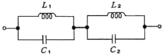
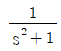
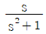
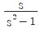
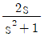
(정답률: 43%)
22. 정현파에서 평균치가 Iav, 실효치가 I 일 때 평균치와 실효치 사이의 관계는?
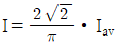
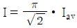
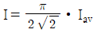
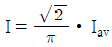
(정답률: 35%)
23. 시정수 τ를 갖는 R-L 직렬 회로에 직류 전압을 인가할 때 t=2τ 가 되는 시간에 회로에 흐르는 전류는 최종값의 몇 % 가 되는가?
- 86
- 73
- 95
- 100
(정답률: 33%)
24. 다음 그림에 표시한 여파기는?
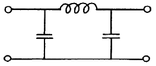
- 고역 여파기
- 대역 여파기
- 대역 소거 여파기
- 저역 여파기
(정답률: 24%)
25. 그림과 같은 L형 회로에 대한 영상 임피던스 Z01과 Z02를 구하면?
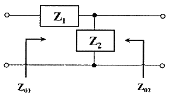
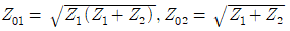
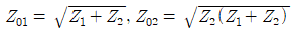
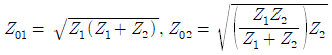
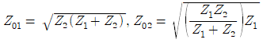
(정답률: 37%)
26. R-C직렬 회로망에서 스위치 S가 t=0 일 때 닫혔다고 하면 전류 i(t)는? (단, 콘덴서에는 초기 전하가 없었다.)
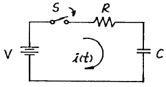
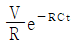
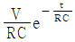
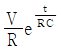
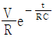
(정답률: 33%)
27. 두 회로 간에 쌍대 관계가 옳지 않은 것은?
- KVL → KCL
- 테브난 정리 → 노튼 정리
- 전압원 → 전류원
- 폐로전류 → 절점전류
(정답률: 35%)
28. 정격전압에서 1kW의 전력을 소비하는 저항에 60%인 전압을 인가할 때의 전력(W)은?
- 490
- 580
- 360
- 860
(정답률: 42%)
29. 어떤 회로의 피상전력이 20kVA이고 유효전력이 15kW일 때 이 회로의 역률은?
- 0.9
- 0.75
- 0.6
- 0.45
(정답률: 44%)
30. 그림의 회로에서 독립적인 전류방정식 N과 독립적인 전압방정식 B는 몇 개인가?
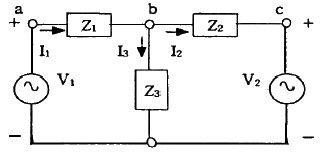
- N=2, B=3
- N=1, B=2
- N=2, B=2
- N=3, B=4
(정답률: 40%)
31. 그림과 같은 회로가 정저항 회로로 되기 위한 C값은 몇 uF인가? (단, R=1㏀, L=400mH이다.)
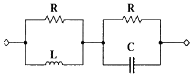
- 0.1
- 0.2
- 0.4
- 1
(정답률: 40%)
32. R-L 직렬회로에 v(t) = 100sin(104t + Q1)V 의 전압을 가할 때 i(t) = 20sin(104t + Q2)A 의 전류가 흘렀다. R=30Ω 일 때 인덕턴스 L의 값은?
- 4mH
- 40mH
- 0.4mH
- 0.04mH
(정답률: 16%)
33. 리액턴스 함수가
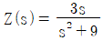
로 표시되는 리액턴스 2단자망은?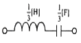
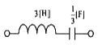
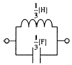
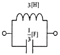
(정답률: 27%)
34. 다음 4단자 회로망에 있어서 4단자 정수(또는 ABCD 파라미터) 중 정수 A와 C의 정의가 옳은 것은?
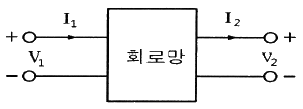
(정답률: 33%)
35. 다음 회로에서 부하(Load)에 최대로 전력을 공급하기 위한 R의 값은?
- 16Ω
- 1Ω
- 4Ω
- Ω
(정답률: 40%)
36. 아래의 A와 B단자에 대해 테브난 등가회로로 변경하였을 때, 등가전압과 등가저항은?
- 2.5V, 12.5Ω
- 5V, 12.5Ω
- 5V, 15Ω
- 2.5V, 15Ω
(정답률: 42%)
37. 다음 회로에서 단자 1, 2간의 인덕턴스 L은?
- L1 + L2
- L1 + L2 - 2M
- L1 + L2 + 2M
(정답률: 47%)
38. 그림과 같은 파형을 실수 푸리에 급수로 전개할 때 설명으로 옳은 것은?
- sin항, cos항을 쓰면 유한항으로 전개된다.
- sin항, cos항 모두 있다.
- cos항은 없다.
- sin항은 없다.
(정답률: 37%)
39. 다음 회로에서 저항 3Ω의 전압은?
- 1V
- 2V
- 3V
- 4V
(정답률: 42%)
40. 다음 함수에 대한 f(t)의 최종값은?
- 3
- 6
- 9
- 18
(정답률: 30%)
3과목: 전자회로
41. 그림 (a)와 같은 리미터(limiter) 회로에 정현파 입력을 인가할 때, (b)와 같은 출력파형이 나타난다. 이때 전원 E1(㉠, ㉡), E2(㉢, ㉣)의 극성은?
- ㉠ +, ㉡ -, ㉢ -, ㉣ +
- ㉠ +, ㉡ -, ㉢ +, ㉣ -
- ㉠ -, ㉡ +, ㉢ -, ㉣ +
- ㉠ -, ㉡ +, ㉢ +, ㉣ -
(정답률: 43%)
42. 증폭기에서 주파수 대역폭을 반으로 줄이면 증폭이득은 약 몇 dB 변화하는가?
- 3
- -3
- 6
- -6
(정답률: 32%)
43. 이상적인 전압 증폭기에서 능동소자의 입력임피던스와 출력 임피던스의 값은?
- Zi = ∞, Zo = 0
- Zi = 0, Zo = ∞
- Zi = 0, Zo = 0
- Zi = ∞, Zo = ∞
(정답률: 35%)
44. 다음 (b)회로에 (a)와 같은 정현파 전압을 인가했을 때, 출력 측에 나타나는 파형은? (단, Vm ＞ VR 이다.)
(정답률: 35%)
45. 차동 증폭기에서 V1 = 10V, V2 = 8V를 인가할 때 출력 전압(VO)은 몇 V인가? (단, 연산증폭기는 이상적이다.)
- -2
- -3
- -4
- -6
(정답률: 20%)
46. A급 증폭기와 B급 증폭기의 최대효율은 얼마인가?
- A급 25%, B급 50%
- A급 50%, B급 78.5%
- A급 78.5%, B급 78.5%
- A급 78.5%, B급 100%
(정답률: 45%)
47. 다음과 같은 순차표를 가지는 카운터의 명칭은?
- 동기식 2진 카운터
- 링 카운터
- 존슨 카운터
- 모듈러 카운터
(정답률: 38%)
48. 다음 전원 평활회로에서 출력전압의 맥동률(Ripple Factor)을 작게 하는 방안으로 가장 적합한 것은?
- L과 C를 모두 작게 한다.
- L을 작게 하고 C를 크게 한다.
- L과 C를 모두 크게 한다.
- L을 크게 하고 C를 작게 한다.
(정답률: 35%)
49. JFET에서 포화 드레인 전류 ID를 나타낸 식은? (단, IDSS는 VGS 일 때 최대 드레인 전류이다.)
(정답률: 27%)
50. T형 플립플롭을 사용하여 4단 계수기를 만들면 최대 몇 개의 펄스까지 계수할 수 있는가?
- 8개
- 16개
- 32개
- 64개
(정답률: 41%)
51. pn접합 다이오드에 순방향 바이어스를 인가하기 위한 설명으로 옳은 것은?
- 양극에 (+), 음극에 (-)의 외부전압을 공급한다.
- 양극에 (-), 음극에 (+)의 외부전압을 공급한다.
- p형 반도체에 (-), n형 반도체에 (+)의 외부전압을 공급한다.
- p형 반도체에 (+), n형 반도체에 (+)의 외부전압을 공급한다.
(정답률: 46%)
52. 다음 회로의 컬렉터 전류(IC)는 몇 mA 인가? (단, VBE = 0.7V, 트랜지스터의 βDC=150)
- 430
- 64.5
- 43.0
- 645
(정답률: 28%)
53. 위상 변조(PM) 방식에서 변조지수와 신호파의 관계 중 옳은 것은?
- 신호파의 주파수 제곱에 비례한다.
- 신호파의 진폭에 비례한다.
- 신호파의 진폭에 반비례한다.
- 신호파의 주파수에 반비례한다.
(정답률: 25%)
54. 다음 회로에 관한 설명 중 가장 적합하지 않은 것은?
- 구형파를 주기적으로 발생시키는 회로이다.
- R과 C를 조절함으로써 발생하는 파형의 주파수를 조절할 수 있다.
- R1과 R2의 값을 조절함에 따라 출력파형의 주파수를 조절할 수 있다.
- 연산증폭기의 (+)단자의 파형은 정현파이다.
(정답률: 34%)
55. 다음 회로의 명칭으로 가장 적합한 것은?
- 고역통과 여파기
- 저역통과 여파기
- DC – AC 변환기
- 슈미트 트리거
(정답률: 28%)
56. 증폭기로 동작하기 위하여 NPN 트랜지스터 베이스의 바이어스 설정으로 옳은 것은?
- 이미터에 대한 양(+)의 값
- 이미터에 대한 음(-)의 값
- 컬렉터에 대한 양(+)의 값
- 접지
(정답률: 24%)
57. 다음 회로에서 입력전압(Vi)과 출력전압(VO)의 관계곡선으로 옳은 것은?
(정답률: 26%)
58. 압전현상을 이용하여 안정도가 높은 발진주파수를 얻는 발진기는?
- VCO
- 빈브리지 발진기
- 수정 발진기
- Hartley 발진기
(정답률: 42%)
59. LPF(Low-Pass Filter) 회로에서 입력저항(Ri)은 10㏀, DC 증폭률은 10, 주파수는 10kHz 일 때, R1, R2, C의 값은?
- R1 = 10㏀, R2 = 10㏀, C = 16nF
- R1 = 10㏀, R2 = 100㏀, C = 16nF
- R1 = 10㏀, R2 = 10㏀, C = 0.16nF
- R1 = 10㏀, R2 = 100㏀, C = 0.16nF
(정답률: 29%)
60. 다음 회로의 출력 파형(VO)으로 가장 적합한 것은?
(정답률: 41%)
4과목: 물리전자공학
61. 반도체의 에너지 대역에 대한 설명으로 틀린 것은?
- 자유전자는 연속적인 에너지 값을 갖는다.
- 결정 내의 에너지 대역은 결정격자의 주기적인 배열에 의해 생긴다.
- 속박 입자의 에너지는 양자화 된다.
- 반도체의 광흡수 특성은 불순물 농도에 무관하다.
(정답률: 40%)
62. p형 반도체의 전기적 성질을 바르게 설명한 것은?
- 3족이 불순물로 도핑 되어 도너 준위를 형성한다.
- n형과 접촉하면 (+)로 대전된다.
- 페르미 준위가 금지대 중앙으로부터 위쪽에 위치한다.
- 정공이 다수캐리어이다.
(정답률: 37%)
63. 광양자가 운동량을 갖고 있음을 증명할 수 있는 것은?
- Zener 효과
- Compton 효과
- Hall 효과
- Edison 효과
(정답률: 37%)
64. T=0K에서 전자가 가질 수 있는 최대 에너지 준위는?
- 페르미 에너지 준위
- 도너 준위
- 억셉터 준위
- 드리프트 준위
(정답률: 43%)
65. 높은 주파수의 응용에 중요한 관계를 갖는 반도체의 성질은?
- 비저항이 클 것
- 캐리어의 이동도 클 것
- 에너지 갭이 좁을 것
- 에너지 갭이 넓을 것
(정답률: 30%)
66. Fermi 에너지에 대한 설명으로 틀린 것은?
- 온도에 따라 그 크기가 변한다.
- 캐리어 농도에 따라 그 크기가 변한다.
- 상온에서 전자가 점유할 수 있는 최저에너지이다.
- 0K에서 전자가 점유할 수 있는 최고 에너지이다.
(정답률: 34%)
67. 다음 중 스위칭 시간이 대단히 짧아 고속 스위칭 회로에 사용되는 소자는?
- UJT
- SCR
- 제너 다이오드
- 터널 다이오드
(정답률: 16%)
68. 발광 다이오드(LED)에 대한 설명으로 옳은 것은?
- 정공과 전자의 재결합에 의해 발생한다.
- 빛에 의하여 기전력이 발생한다.
- 광전류의 증폭이 이루어진다.
- 역바이어스 접합을 사용한다.
(정답률: 26%)
69. 접합형 전계효과 트랜지스터의 핀치오프 상태에 대한 설명으로 적합하지 않는 것은?
- 드레인 전류가 최대가 되는 상태
- 채널의 저항이 최대가 되는 상태
- 채널의 단면적이 최소가 되는 상태
- 채널이 끊기는 상태
(정답률: 32%)
70. 정자계내에서 자계와 수직이 아닌 임의의 각도로 운동하는 전자의 궤도는?
- 직선 운동
- 원 운동
- 나선 운동
- 포물선 운동
(정답률: 39%)
71. MOSFET의 구조와 동작원리에 대한 설명으로 옳은 것은?
- n채널 MOSFET의 단면구조는 드레인-소스간 p형 반도체의 기판 위에 절연체를 붙이고, 그 위에 금속단자를 붙여 게이트 단자를 만든다.
- n채널 MOSFET의 동작원리는 게이트 단자에 문턱전압이상의 (+) 전압을 인가하면 MOSFET 드레인-소스사이는 2개의 역방향 다이오드와 같은 등가회로를 갖는다.
- p채널 MOSFET의 단면구조는 p형 반도체기판(Substrate)에 2개의 p+형 반도체를 형성시킨다.
- n채널 MOSFET의 단면구조는 n형 반도체기판(Substrate)에 2개의 p+형 반도체를 형성시킨다.
(정답률: 30%)
72. MOSFET에 대한 설명 중 틀린 것은?
- 문턱전압(thereshold voltage)을 넘는 게이트 전압에서만 작동한다.
- 소스와 게이트간의 바이어스 전압의 극성에는 무관하게 동작한다.
- 소스와 게이트간의 전압에 의하여 채널이 생긴다.
- 게이트와 기판 사이에는 엷은 산화막이 있다.
(정답률: 40%)
73. 반도체의 성질에 대한 설명으로 틀린 것은?
- 반도체는 역기전력이 크며 부 온도계수를 갖는다.
- PN 접합 부근에서는 n에서 p로 전계가 생긴다.
- 직접 재결합률은 정공밀도와 전자밀도의 곱에 비례한다.
- p형 반도체의 억셉터 원자는 정상 동작 온도에서 부전하가 된다.
(정답률: 25%)
74. 수소원자에서 원자핵 주위를 돌고 있는 전자가 에너지 준위 E1 = -5.4×10-13(erg)상태에서, 에너지 준위 E2 = -21.7×10-12(erg)상태로 천이할 때 내는 빛의 진동수는 약 얼마인가? (단, Planck 상수 h = 6.63×10-27erg·sec이다.)(문제 오류로 가답안 발표시 2번으로 발표되었지만 확정답안 발표시 모두 정답처리 되었습니다. 여기서는 가답안인 2번을 누르면 정답 처리 됩니다.)
- 1.2×105 s-1
- 2.5×1015 s-1
- 5.03×1016 s-1
- 10.3×1022 s-1
(정답률: 40%)
75. JFET의 특성곡선에 대한 설명으로 틀린 것은?
- 저항성 영역에서는 채널저항이 거의 일정하다.
- 저항성 영역에서는 공간전하층이 매우 좁다.
- 항복영역에서는 VDS를 크게 증가시키면 ID가 급격히 증대한다.
- 포화영역에서는 VDS가 어느 정도 증대되면 채널저항이 급격히 감소된다.
(정답률: 26%)
76. 광전자 방출에 대한 설명으로 틀린 것은?
- 광전자 방출은 금속의 일함수와 관계가 있다.
- 금속 표면에 빛이 입사되면 전자가 방출되는 현상을 광전자 방출이라 한다.
- 한계 파장보다 긴 파장의 빛을 다량으로 입사시키면 광전자 방출이 일어난다.
- 광전자 방출을 위해서는 금속 표면에 입사되는 빛의 파장이 한계 파장보다 짧아야 한다.
(정답률: 21%)
77. 이미터접지 증폭회로에서 베이스전류를 10㎂에서 20㎂로 증가시켰을 때, 컬렉터 전류의 변화량은? (단, β = 100이다.)
- 1mA
- 10mA
- 100mA
- 1A
(정답률: 48%)
78. 실온에서 Si 진성반도체의 고유저항은 약 얼마인가? (단, 실온에서 n = 1400cm2/V·sec, p = 600cm2/V·sec, ni = 1.5×1010개/cm3 이다.)
- 5.1×103 Ω·m
- 3.8×104 Ω·m
- 2.1×105 Ω·m
- 4.8×10-6 Ω·m
(정답률: 21%)
79. 도체, 반도체, 절연체의 에너지 대역에 관한 설명으로 틀린 것은?
- 도체는 전도대와 가전자대가 중첩되었다.
- 반도체의 금지대역폭이 절연체보다 작다.
- 도체의 금지대역폭이 반도체보다 작다.
- 반도체는 금지대역폭이 5eV 이상이다.
(정답률: 26%)
80. 정상 동작 상태로 바이어스 된 NPN 트랜지스터에 컬렉터 접합을 통과하는 주된 전류는?
- 확산 전류
- 정공 전류
- 드리프트 전류
- 베이스 전류
(정답률: 29%)
5과목: 전자계산기일반
81. 데이터 버스 폭이 32비트이고, 버스 클럭 주파수가 10MHz 일 때 버스 대역폭은?
- 32Mbyte/s
- 40Mbyte/s
- 320Mbyte/s
- 400Mbyte/s
(정답률: 35%)
82. RISC에 대한 설명으로 틀린 것은?
- CISC에 비하여 전체 명령어의 수가 적다.
- 칩설계가 쉽다.
- 데이터 처리속도가 CISC보다 빠르다.
- 설계 시 에러 발생률이 높다.
(정답률: 27%)
83. C 언어가 높은 호환성을 갖는 이유가 아닌 것은?
- 프로그램간의 인터페이스가 함수로 통일
- 높은 이식성
- 자료형 변환이 자유로움
- 포인터 사용이 가능
(정답률: 32%)
84. 다음과 같은 명령어 형식을 만들기 위해 요구되는 명령의 최소 비트(bit)는?
- 12
- 15
- 17
- 19
(정답률: 28%)
85. 서브루틴 호출 시 필요한 자료 구조는?
- 스택(stack)
- 환형 큐(circular queue)
- 다중 큐(multi queue)
- 트리(tree)
(정답률: 35%)
86. 프로그램이 수행될 때 최근에 사용한 인스트럭션과 데이터를 다시 사용할 가능성이 높은 현상을 무엇이라 하는가?
- 참조(접근)의 지역성
- 디스크인터리빙
- 페이징
- 블록킹
(정답률: 29%)
87. C 프로그램에서 선행처리기에 대한 설명으로 틀린 것은?
- 컴파일하기 전에 처리해야 할 일들을 수행하는 것이다.
- 상수를 정의하는 데에도 사용한다.
- 프로그램에서 '#' 표시를 사용한다.
- 유틸리티 루틴을 포함한 표준 함수를 제공한다.
(정답률: 31%)
88. 지정 어드레스로 분기한 후에 그 명령으로 되돌아오는 명령은?
- 비교 명령
- 조건부 분기 명령
- 서브루틴 분기 명령
- 강제 인터럽트 명령
(정답률: 38%)
89. 사용자가 프로그래밍 할 수 없는 ROM은?
- ROM
- PROM
- EPROM
- EEPROM
(정답률: 28%)
90. 16비트 컴퓨터 시스템에서 다음과 같은 두 가지의 인스트럭션 형식을 사용한다면 최대 연산자의 수는 얼마인가?
- 36
- 72
- 86
- 512
(정답률: 25%)
91. 어셈블리 언어로 프로그램을 작성할 때 절대번지 대신에 간단한 기호 및 명칭을 사용할 수 있는데 이러한 번지를 무엇이라 하는가?
- self address
- symbolic address
- relative address
- symbolic relative address
(정답률: 39%)
92. DMA(Direct Memory Access)에 관한 설명으로 옳은 것은?
- CPU가 입·출력을 직접 제어한다.
- 입·출력 동작을 수행하는 동안에는 프로세서가 다른 일을 하지 못한다.
- 입·출력 모듈의 인터럽트 신호에 의하여 데이터전송이 이루어진다.
- CPU가 개입하지 않고 기억장치와 입·출력 모듈사이에 데이터 전송이 이루어진다.
(정답률: 31%)
93. 하드디스크에서 등각속도방식의 특징이 아닌 것은?
- 회전 구동장치가 간단하다.
- 디스크 평판이 일정한 속도로 회전한다.
- 디스크 저장 공간이 효율적으로 사용된다.
- 트랙간의 저장밀도가 모두 다르다.
(정답률: 37%)
94. 컴퓨터의 클록 펄스 주기가 5MHz 이고, 16비트 레지스터를 통해 데이터를 직렬 전송한다면, 순수 데이터의 비트 전송시간(A)과 워드 전송시간(B)은?
- A : 0.2㎲, B : 0.5㎲
- A : 0.2㎲, B : 3.2㎲
- A : 0.4㎲, B : 6.4㎲
- A : 0.4㎲, B : 12.8㎲
(정답률: 36%)
95. 동시에 2개 이상의 프로그램을 컴퓨터에 로드(load)시켜 처리하는 방법을 무엇이라 하는가?
- double programming
- multi programming
- multi-accessing
- real-time programming
(정답률: 39%)
96. 짝수 패리티 비트의 해밍(HAMMING)코드로 0011011을 받았을 때 오류가 수정된 정확한 코드는?
- 0010001
- 0001011
- 0111011
- 0011001
(정답률: 27%)
97. 다음 중 수의 변환이 옳은 것은?
- FFF16 = 1111111112
- 25610 = 1000000002
- FF16 = 1111112
- F16 = 1410
(정답률: 40%)
98. 6비트로 표시되는 지수가 있다. 지수표시 방법으로서 바이어스 된 지수표시를 사용하였을 때 바이어스 값은?
- 6
- 16
- 32
- 64
(정답률: 15%)
99. AND 연산에서 레지스터 내의 어느 비트 또는 문자를 지울 것인가를 결정하는 것은?
- mask bit
- sing bit
- check bit
- parity bit
(정답률: 32%)
100. 스택 메모리를 이용하여 수식 E = (A+ B – C)×D 연산을 하려고 할 때, 연산 명령어 순서로 옳은 것은?
- SUB → ADD → ADD
- ADD → MUL → SUB
- MUL → ADD → SUB
- ADD → SUB → MUL
(정답률: 35%)